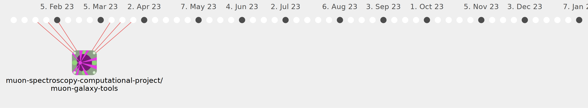

joelvdavies

Commits all-time: 41
Commits last year: 41

(41)
- 29ffc11
- e75cafc
- 9f8d895
- 9864e03
- d8aa3f4
- 1fa520d
- 6b971f1
- 17596de
- 2cecd3f
- c1fc929
- 77c1cc2
- 47d73f6
- e83e790
- ffe7239
- 9c53a59
- e462a5a
- ab3c52c
- 0ade596
- fb69398
- 555e9f6
- e9794f2
- c3ba665
- ce6e230
- b3b4551
- 39e9d6a
- 90ff1b1
- 6eefce7
- 4d3d5c9
- 2888877
- 4cf6236
- b2fccd2
- 3539c17
- 07851cd
- 224a963
- b9da1d2
- 304b484
- b3044aa
- 4a25cf9
- 7cd57a8
- 573c7a7
- 805bf1b